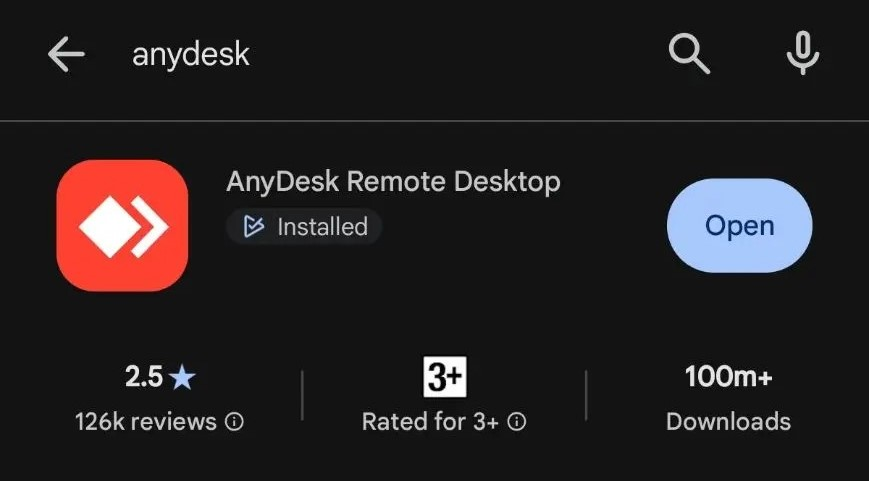

1
Установка AnyDesk из Google Play
Откройте приложение Google Play и в поиске введите "AnyDesk".

📷 Ищите официальное приложение «AnyDesk — удалённый доступ».
Пошаговая инструкция по установке приложения, плагина управления и предоставлению необходимых разрешений.
Откройте приложение Google Play и в поиске введите "AnyDesk".

Чтобы мы могли не только видеть экран, но и управлять, скачайте этот плагин:
1. Откройте приложение AnyDesk.
2. Нажмите ОК.
3. Пролистайте вниз и нажмите на "Install!" возле "Plugin AD1".
4. Нажмите кнопку установки в Google Play.
Необходимо предоставить разрешение службе управления:
1. Зайдите обратно в AnyDesk.
2. Около той же кнопки нажмите "Consent!".
3. Подтвердите и нажмите "Activate!".
4. Выберите "AnyDesk Control Service AD1" и разрешите доступ.
Откройте главное меню AnyDesk. В верхней части в блоке «Это рабочее место» отображается ваш личный 9-значный код:
Продиктуйте этот номер специалисту. Когда на экране появится запрос на подключение, нажмите «Принять» и подтвердите старт записи экрана.
Вы можете прервать удаленный доступ в любой момент. Для этого нажмите на плавающий красный значок AnyDesk и выберите «Отключить» (красный крестик), либо просто полностью закройте приложение из панели запущенных программ.